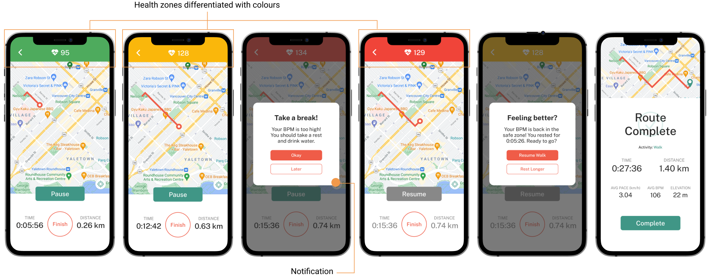
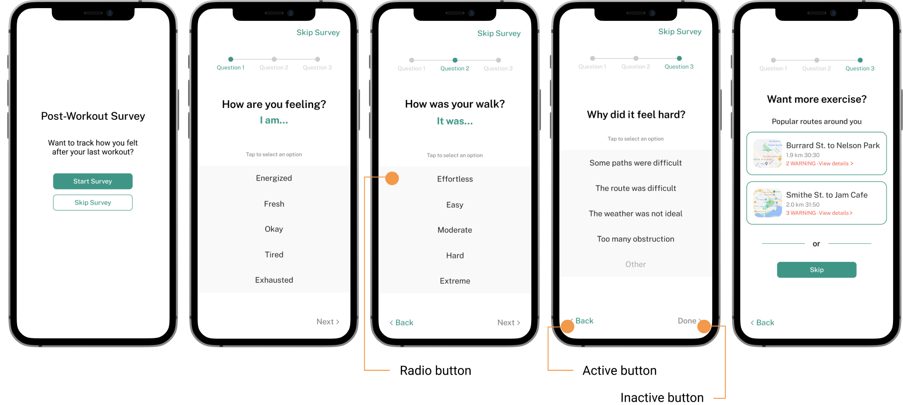

Solution
Trackling utilizes the user’s health data from in-app logged activity together with synced health applications to provide personalized workouts, notifications and visualized progress tracking. Trackling also logs users’ activity progress through performance metrics such as distance travelled, average moving pace during an activity, elevation gain on the route, and total time elapsed for an activity.
Goal
Notify users when they are exceeding their physical limits based on their the safe thresholds of their active heart rate in beats per minute (BPM) for their age group for low, moderate, and high intensity activities.
Design considerations
To create an accessible application suitable for seniors, the design considerations include high contrast colour combinations, larger standard font, and formal language understood by our users.
Onboarding

Health Application Data Sync

By syncing health data with other applications during the on boarding, Trackling is able to create a more seamless and personalized health tracking experience using previously collected information, such as average resting BPM, steps taken in a day, week or month, and other performance-based statistics.
Navigation Page

Health Application Data Sync

In suggested workouts and on the Workout page, the user is given personalized exercise plans as well as nearby routes according to the information gained through onboarding. Users are also given the freedom to create their own route.
Workout Recorder

Real-Time Health Report

The most crucial feature of our application is providing users with real-time notifications during their workout depending on their 'zones'. These 'zones' associate with the user's heart rate. The following zones are: green when the user’s heart rate is under 102, yellow: under 128, and red: anything above 128. If the user hits the yellow or red zone, the system will alert to take a break until their BPM goes into the safe zone again. Users can visually watch their zones and heart rate change, as their heart rates are displayed on top of the screen.
Additionally, on the bottom of the tracking screen, time and distance get measured along their way of exercises. This information will get added to their progress report to see in the future.
Post Workout

Activity Survey

Once an exercise is complete, the application prompts a post workout survey to understand the user better. The first question asks about their feelings and second questions asks about the difficulty of the workout. If the answer to the second question was either effortless or easy, the user will be guided to another screen that gives you the option of doing another workout. If the user chooses okay, the survey ends there and returns to the home screen. Lastly, if the user chooses hard or extreme, question three asks the reasoning of the difficulty.
A post activity survey is an important feature of our application as it allows Trackling to extract information and recommend workouts that are catered to the users physical ability and limits.